Anime Scenes
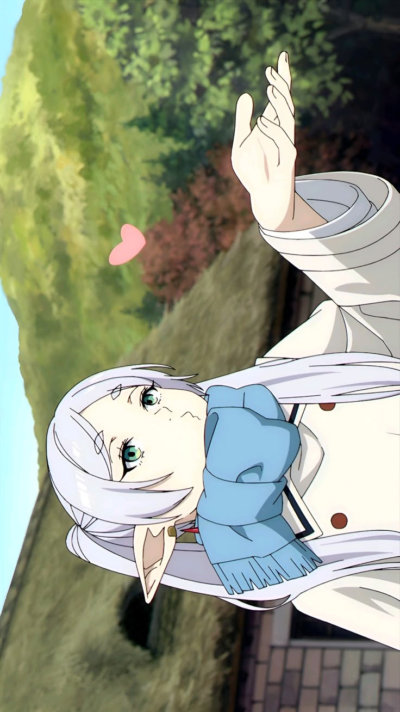
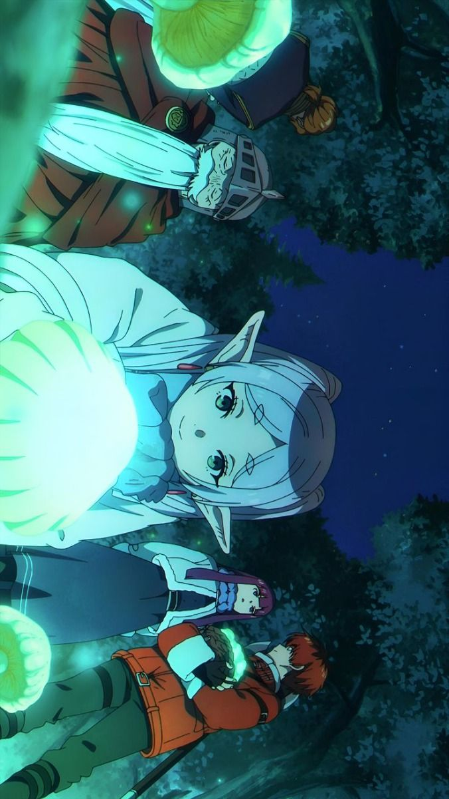
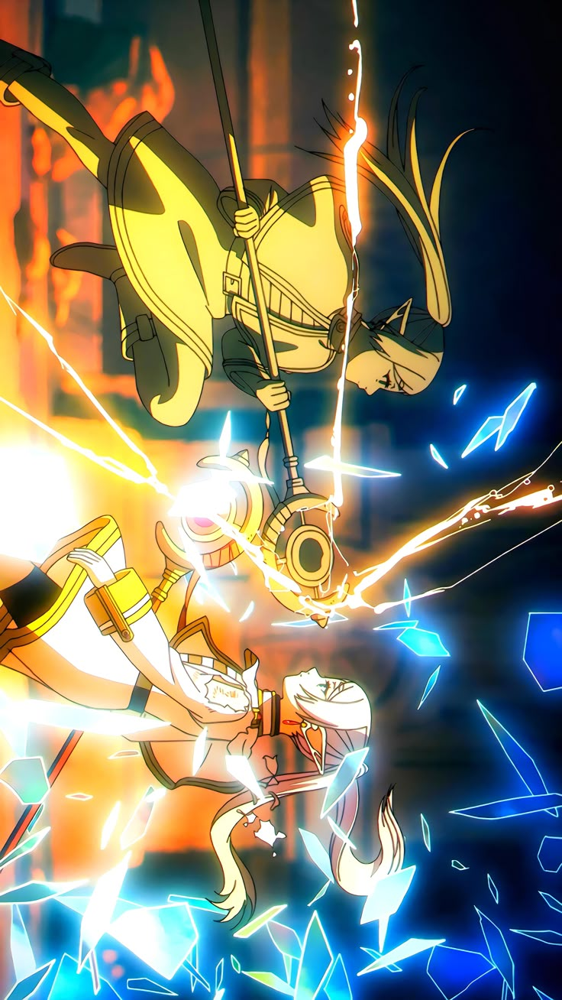
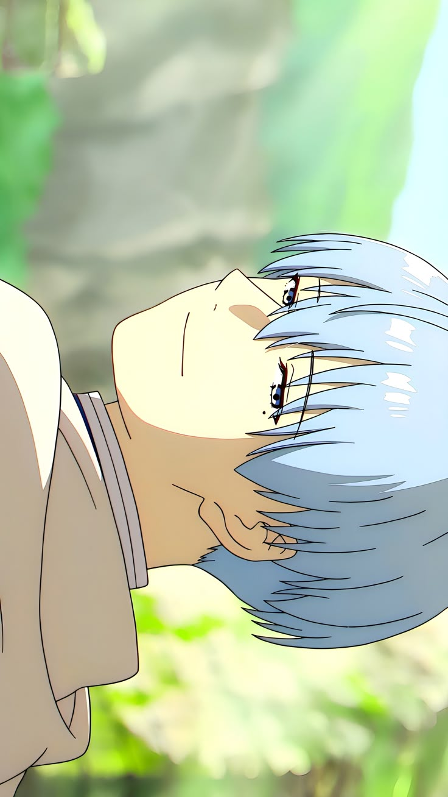
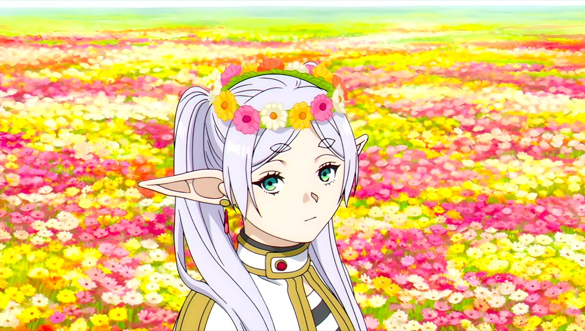
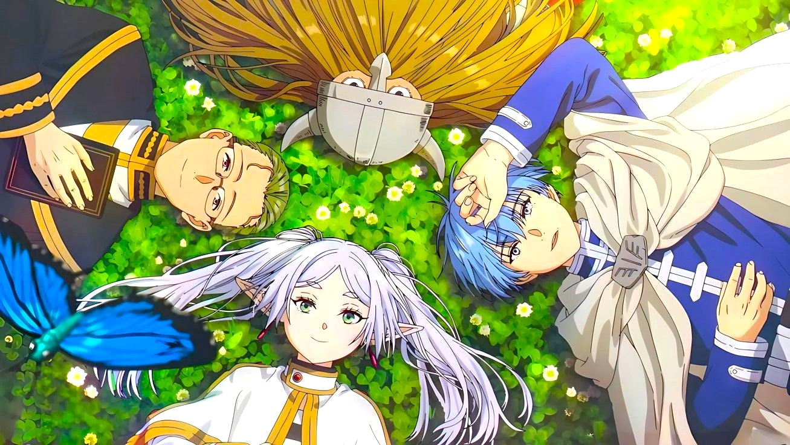
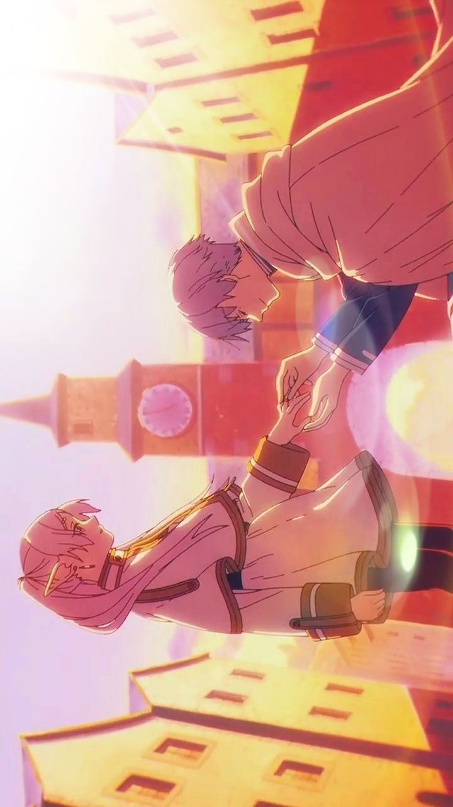
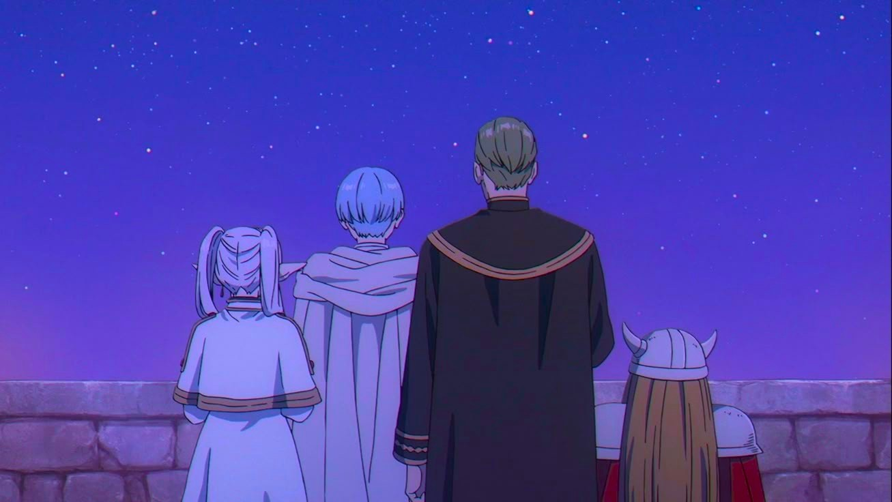
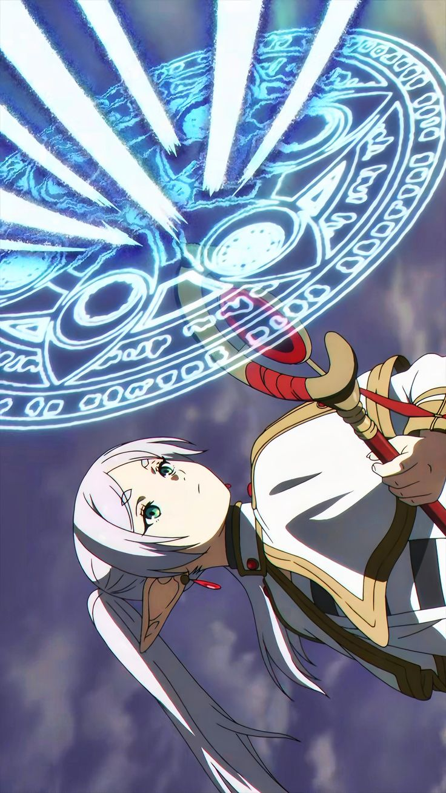
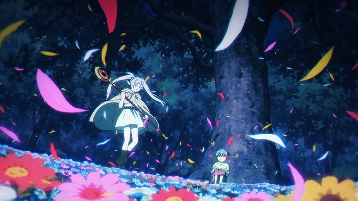
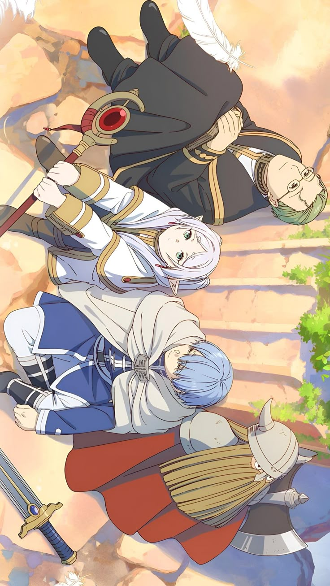
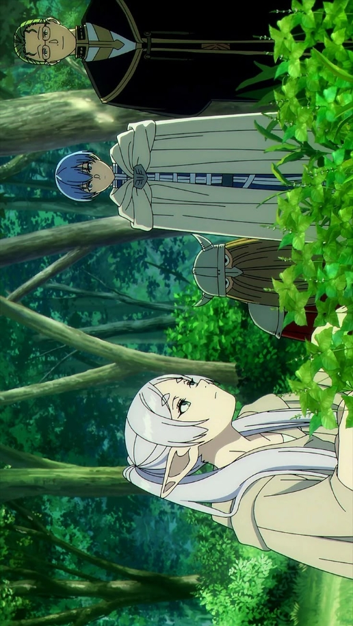
“Take my hand, Frieren. I’ll be a reason for you to go on a journey.”
Anime Studio: Madhouse
Director: Keiichirō Saitō
Producer: Yuichiro Fukushi
Distributor: Crunchyroll
Rating: ★ 9.0 / 10
Source: Manga
Release Date: Sep 29, 2023
Episodes: 28 Episodes
Music by: Evan Call
Status: Finished (S1)
Country: Japan
Language: Japanese
Original Author: Kanehito Yamada
Awards: Multiple Anime of the Year Awards